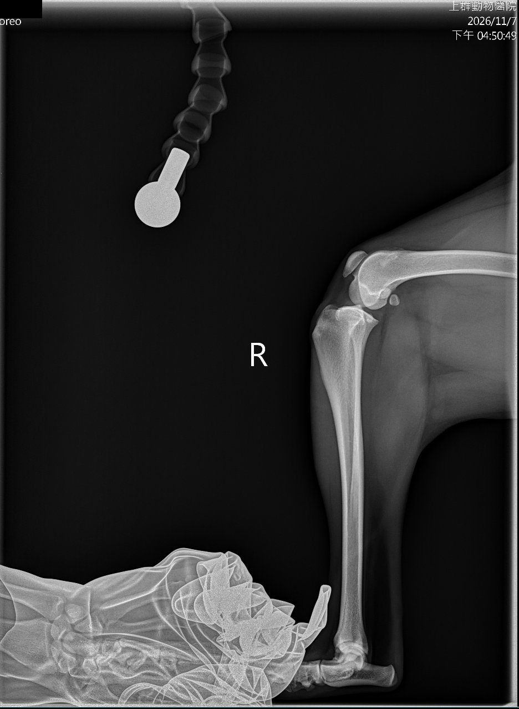
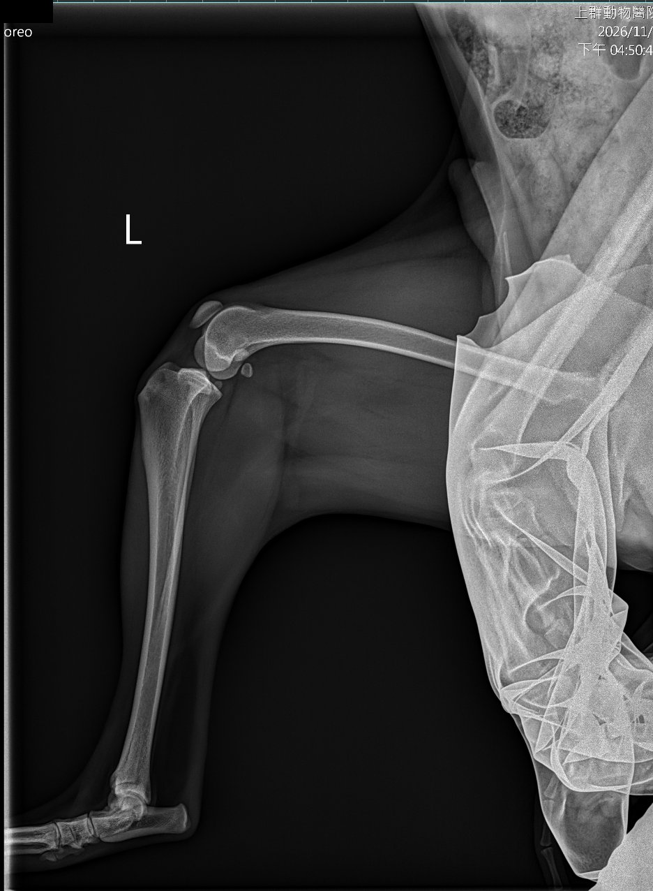
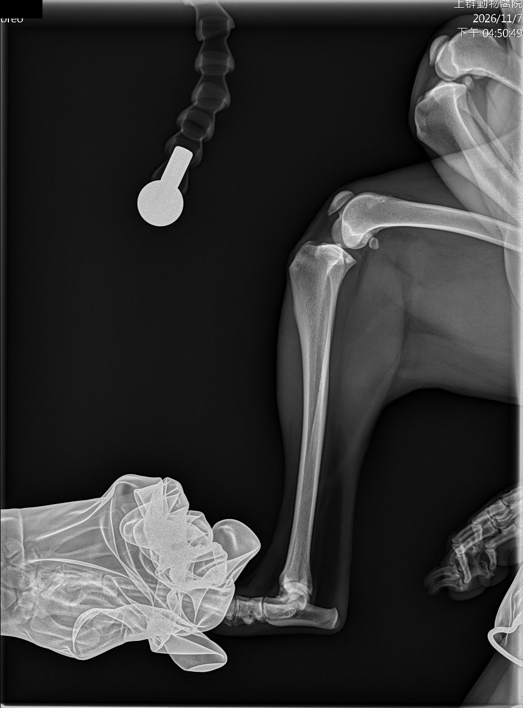
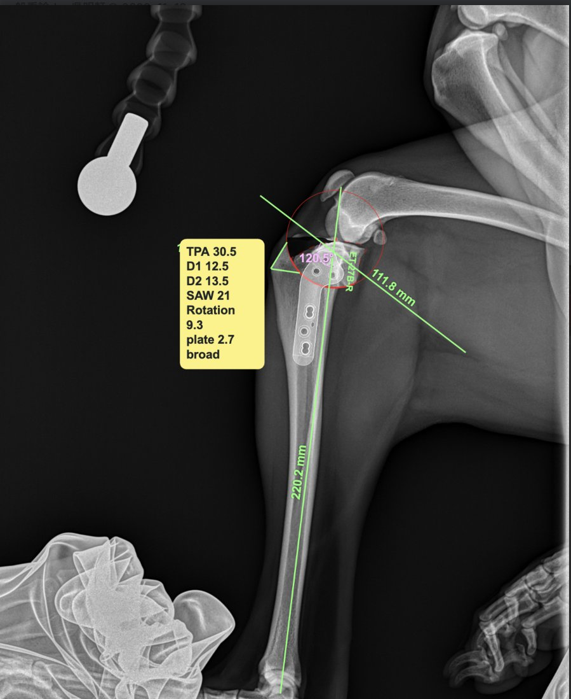
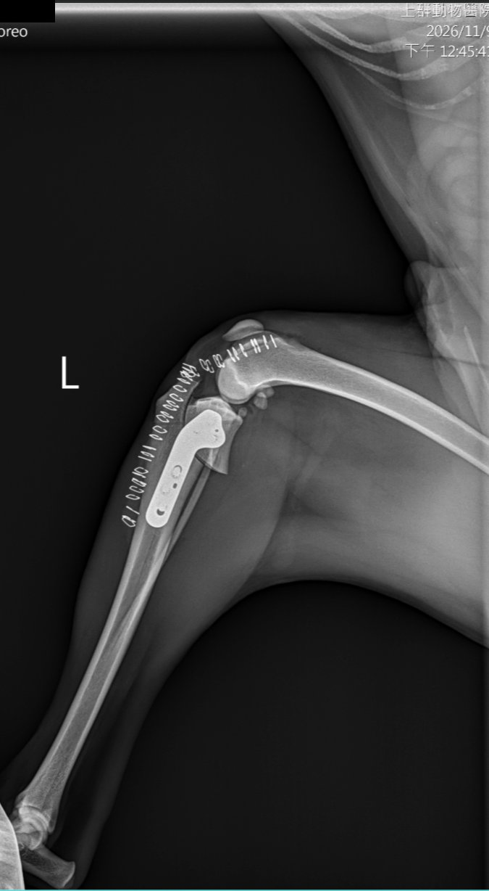
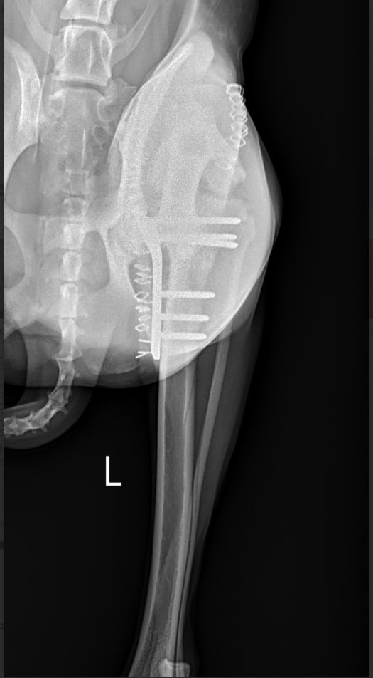

一句話與數值總表
TPLO（Tibial Plateau Leveling Osteotomy，脛骨高原平整截骨術）沿著一個以髁間隆起為圓心的圓弧把脛骨近端鋸開，再把帶著關節面的那一塊沿圓弧轉，讓脛骨平台角（Tibial Plateau Angle, TPA）從術前的 30.5° 降到約 5°，最後用骨板固定。規劃片上的每個數字，都在回答「從哪裡鋸、鋸多大的圓、要轉多少、用什麼板」。
| 規劃片上的標註 | Oreo 的值 | 意思 | 怎麼用 |
|---|---|---|---|
| TPA | 30.5° | 脛骨平台線與「垂直於脛骨功能軸的線」之間的夾角；越大，平台越斜 | 決定要轉多少度（30.5 → 5，轉 25.5°） |
| 粉紅色角度 | 120.5° | 平台線與功能軸直接量出的夾角；TPA ＝ 這個角 − 90° | 軟體算 TPA 的中間值（講義範例 114.7° → TPA 24.7°） |
| 綠色長線 | 220.2 mm | 脛骨功能軸長度（髁間隆起中點 → 距骨中心） | 確認軸線畫對、評估脛骨大小 |
| 綠色斜線 | 111.8 mm | 畫出來的平台線長度（軟體把線延伸到圖外） | 沒有臨床意義，只用它的方向 |
| SAW | 21 | 弧形鋸片（radial／biradial saw blade）半徑 21 mm；紅圈就是鋸路 | 鋸片尺寸常見 12、15、18、21、24、27、30 mm |
| D1 | 12.5 mm | 髕韌帶在脛骨粗隆的附著點 → 鋸路，垂直於脛骨前緣量 | 術中用尺量出鋸路位置；也約等於留下的脛骨粗隆寬度 |
| D2 | 13.5 mm | 同一個附著點 → 鋸路，沿脛骨近端前上緣量 | 和 D1 兩點定位，把圓心擺在髁間隆起 |
| Rotation | 9.3 mm | 關節塊沿鋸路要滑動的距離 | 術中在鋸路兩側各做一個記號，轉到兩記號相距 9.3 mm |
| plate 2.7 broad | — | 用 2.7 mm 系統（配 2.7 mm 螺絲）的寬版 TPLO 骨板 | 依體型與骨大小選 |
本頁數值解讀依文獻與規劃軟體的常見用法整理（出處見第 9 節），不是主刀醫師的說明；各醫院軟體的標註方式可能略有不同。第 8 節列了幾點需要跟主刀確認的地方。
為什麼要「轉平台」
先懂問題在哪，數字才有意義。
前十字韌帶斷了會怎樣
脛骨平台是往後下方傾斜的斜坡。狗站立負重時，股骨踩在這個斜坡上，會把脛骨往前推，這個力叫脛骨前推力（cranial tibial thrust）。正常時由前十字韌帶（Cranial Cruciate Ligament, CCL）擋住；韌帶斷了，脛骨每一步都往前滑，造成疼痛、跛行、半月板受傷，最後走向骨關節炎（Osteoarthritis, OA）。
TPLO 的想法
不修韌帶，而是把斜坡改平。平台角越小，前推力越小；轉到約 5° 時，負重的力量大致垂直壓在平台上，脛骨就不會一直往前滑，膝關節靠肌肉與其他構造就能穩定。這叫「動態穩定」，所以術後抽屜試驗仍可能是陽性，但功能上已經穩了（補充）。
TPA 參考值：健康米格魯的 TPA 平均約 24°（X 光 24.3 ± 2.5°；Kim 2022）；一組接受 TPLO 的犬術前 TPA 平均 28.3 ± 3.2°（範圍 22–36°；Fujino 2020）。Oreo 的 30.5° 落在這個範圍內，偏陡。
TPA 怎麼量、片子要怎麼拍
兩條線（Kim 2022）
- 脛骨功能軸：髁間隆起（intercondylar tubercles）的中點 → 距骨（talus）中心。
- 脛骨平台線：內側脛骨髁的前緣 → 後緣。
- TPA：平台線與「垂直於功能軸的線」的夾角。
規劃軟體通常直接量平台線與功能軸的夾角（Oreo 片上粉紅色 120.5°），減 90° 就是 TPA。內側髁的後緣在片子上不好找，是 TPA 量測誤差的主要來源（Kim 2022）。
拍片條件
- 側躺，膝關節與跗關節都屈曲 90°。
- 兩側股骨髁重疊在 2 mm 以內（真正的側位）。
- 片子要包含整條脛骨：上到膝、下到跗關節，才能找到距骨中心。
- 量 mm 之前要先做放大率校正（補充）：Oreo 片上方吊著的金屬圓片看起來就是校正用的標記物。
位置歪掉（轉動、膝角度不對），TPA 會差好幾度，連帶轉錯量。
Oreo 的術前片（2026-11-07）



自己檢查時可以看：股骨髁兩側有沒有重疊成一個、膝與跗是不是接近 90°、距骨有沒有在片內。螢幕截圖的解析度不夠，本頁不判斷髁的重疊是否在 2 mm 內。
Oreo 的規劃片逐項看

依手術順序看這些數字
- 量 TPA（30.5°）：決定要轉 30.5 − 5 ＝ 25.5°。
- 選鋸片（SAW 21）：圓要大到能包住關節面那一塊，又不能大到把前面的脛骨粗隆削得太薄。Fujino 2020 的選法：量脛骨前緣到內側平台後緣的寬度 W，取前 1/3 處到髁間隆起的距離當半徑，挑最接近的鋸片。
- 定位鋸路（D1 12.5、D2 13.5）：術中看不到 X 光，就從摸得到的髕韌帶附著點，用尺量 D1、D2 兩個距離標出鋸路，讓圓心落在髁間隆起。三篇研究的 D1、D2 定義都相同，術中誤差約 2 mm 內（Todd 2026）。
- 轉（Rotation 9.3）：鋸開前在鋸路兩側做記號；鋸開後把關節塊沿圓弧轉，直到兩個記號相距 9.3 mm，平台就從 30.5° 變成約 5°。
- 固定（plate 2.7 broad）：上方螺絲固定關節塊、下方固定脛骨幹。
9.3 mm 是怎麼算出來的
關節塊是繞著圓心轉的，所以記號移動的距離由鋸片半徑和要轉的角度決定：
| 算法 | 公式 | Oreo（R ＝ 21 mm，轉 25.5°） |
|---|---|---|
| 弦長（兩記號的直線距離） | 2 × R × sin(轉角 ÷ 2) | 2 × 21 × sin 12.75° ≈ 9.27 mm |
| 弧長（沿圓弧走的距離） | R × 轉角（弧度） | 21 × 0.445 ≈ 9.35 mm |
兩種算法四捨五入後都是 9.3 mm，可以反推這份規劃的目標 TPA 是 5°。如果目標是 6.5°，轉 24° 時弦長只有約 8.7 mm。三篇參考文獻都沒寫轉量表是用弦長還是弧長；轉角小時兩者幾乎相同。
D1 大約就是鋸完後留在前面的脛骨粗隆寬度（tibial tuberosity width, TTW）。大型犬（平均約 40 kg）的 TTW 小於 10 mm 時，術後脛骨粗隆骨折的風險增加（Bergh 2008，Todd 2026 與 Fujino 2020 引用）；10 mm 是大型犬的合理目標，巨型犬通常更小、小型犬可以更薄（< 15 kg 犬平均 7.7 mm 也沒有骨折）。另一種標準是留下 > 1 cm 或脛骨前後寬度的 25% 以上（Kim 2022）。Oreo 的 D1 是 12.5 mm。
互動示意：轉平台
拖動滑桿：可以調整術前 TPA、目標 TPA、鋸片半徑，再用「旋轉進度」看關節塊沿圓弧轉下去的樣子。圖是示意，不是 Oreo 的實際比例。
圖例：藍點＝鋸開前在脛骨幹側的記號（不動）；紅點＝關節塊上的記號（跟著轉）；兩點間虛線＝旋轉距離。紅虛線圓＝鋸路。黃線＝平台線。示意 TTW 的計算只用來說明「鋸片越大、粗隆越薄」，不是實測值。
可以試試看：
- 把術前 TPA 調大（例如 36°），同樣的鋸片要轉更多 mm。
- 把鋸片換成 27 或 30 mm：轉同樣角度要走更長的距離，而且前面的粗隆變薄（示意 TTW 掉到 10 mm 以下會出現提醒）。
- 目標改成 6.5°，看旋轉距離少多少。
術後片怎麼看（2026-11-09，左後肢）


術後片檢查清單（補充，依一般 TPLO 術後評估整理）
| 看什麼 | 為什麼 |
|---|---|
| 術後 TPA | 目標約 5°（文獻常寫 5–6.5°）。Robinson 2006 的分法：< 4° 過度轉、4–8° 適當、> 8° 轉不夠（Todd 2026 引用）。過度轉可能增加後十字韌帶的負擔，轉不夠則前推力沒消除（補充）。 |
| 鋸路位置 | 圓心是否落在髁間隆起；鋸路偏前或偏遠端，留下的粗隆會變薄（Fujino 2020）。 |
| 脛骨粗隆 | 寬度夠不夠、有沒有裂線；這是術後骨折的好發處。 |
| 螺絲 | 近端螺絲不能進關節；螺絲長度與皮質骨咬合。 |
| 腓骨 | 有沒有骨折（常見的術中或術後併發症之一，補充）。 |
| 正位片的對位 | 有沒有內翻、外翻或旋轉錯位。 |
這兩張是螢幕截圖，解析度與位置不足以精確量術後 TPA，本頁不提供 Oreo 的術後數值；要量請在原始 DICOM 上用同樣的兩條線量。
術後復健與追蹤
課程講義（第 4 週 p.71–72，Fossum 修改）的 TPLO 術後時間表，加上其他週相關的內容。
| 時期 | 重點 |
|---|---|
| 第 1–7 天 | 冰敷：運動前每日 3 回、每回 10–15 分鐘；按摩每日 3 回、每回 5 分鐘，由腳趾往髖部；PROM 每日 3 回、每回 10 次，伸屈膝以上與膝以下關節；牽繩短距離如廁。 |
| 拆線後 | 水中跑步機（UWTM）每日 3 回、每回 10 分鐘（傷口未癒合不下水）。 |
| 第 1–21 天起 | 跨橫桿、坐站、穿梭轉圈（低強度）。 |
| 第 3–4 週 | UWTM 每週 3 次、每次 10 分鐘；講義寫「動物走得不錯就不需要 PROM」。 |
| 第 8–12 週 | 改上坡行走，逐步增加時間與強度；回診照片確認骨癒合後再放寬活動（補充）。 |
- 全程避免：膝關節過度伸展與旋轉（第 4 週 p.68）、跳躍與激烈玩耍；家中地板止滑。
- 止痛：講義列 Carprofen、Deracoxib、Firocoxib、Meloxicam（NSAIDs）與 Gabapentin（第 4 週 p.8）；常用途徑多為 PO，Carprofen 另有 SC、Meloxicam 另有 SC／IV 劑型（途徑為補充）。實際藥物與劑量依主治醫囑。
- 髕韌帶增厚（patellar desmitis）：TPLO 術後常見；Gallagher 2012 在術後第 4、6 週各給一次體外震波（ESWT）600 發，第 6、8 週髕韌帶厚度明顯減少（第 6 週 p.24）。
- 骨癒合：骨板加壓、間隙小時可能是初級骨癒合，沒有骨痂、骨折線消失較慢；解除限制後第一個月牽繩慢走或輕度跑步機（第 2 週 p.17）。
需要跟主刀確認的地方
- 手術側別：規劃片沒有左右標記，骨板模板旁的標籤看起來寫「…27B-R」（可能代表 2.7 broad 右側板）；但術後片是左後肢。可能是模板命名方式不同，或規劃的是另一側，請確認規劃片對應的是哪一肢。
- 目標 TPA：從 9.3 mm 反推是 5°，可以跟主刀確認醫院的習慣值。
- 轉量的算法：軟體的 Rotation 是弦長還是弧長（本例兩者都約 9.3 mm，不影響）。
- 半月板：術中有沒有處理半月板（例如部分切除或 release），會影響術後疼痛與追蹤重點。
- 術後 TPA 與回診時間：術後實際 TPA、預計幾週回診照片。
資料來源
- Todd H, et al. Assessment of the accuracy of digital surgical planning and its implementation with tibial plateau levelling osteotomy. Vet Res Commun 2026;50:321.（D1／D2／D3 定義、目標 TPA 5°、TTW < 10 mm 風險、Robinson 2006 分法）PMC13171988
- Kim J, et al. Preoperative planning using computed tomography in tibial plateau levelling osteotomy: A comparison with conventional radiography. Vet Med Sci 2022;8:959–965.（TPA 量法與拍片條件、健康米格魯 TPA、TTW > 1 cm 或 25%）PMC9122466
- Fujino H, et al. Preoperative planning for tibial plateau leveling osteotomy based on proximal tibial width. J Vet Med Sci 2020;82:661–667.（鋸片半徑選法、鋸片尺寸、術前 TPA 分布、TTW 討論）PMC7273611
- 課程講義〈常見伴侶動物骨科疾病復健〉第 4 週 p.8、p.68、p.71–72；〈復健相關解剖學及生理學〉第 2 週 p.17、p.40；〈水療及物理治療（二）〉第 6 週 p.24（劉金鳴等）。
- 旋轉距離公式（弦長、弧長）為整理者依幾何推導，用 Oreo 的數字驗算與規劃片相符。